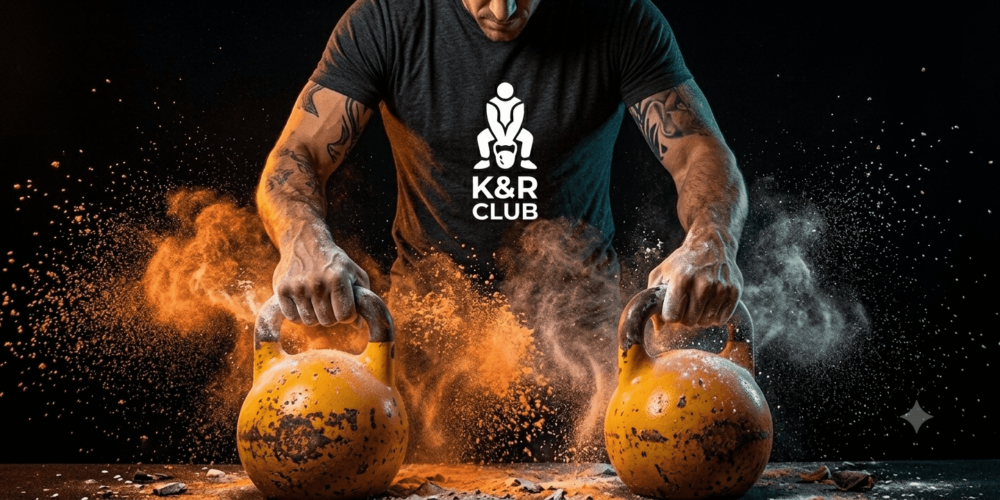
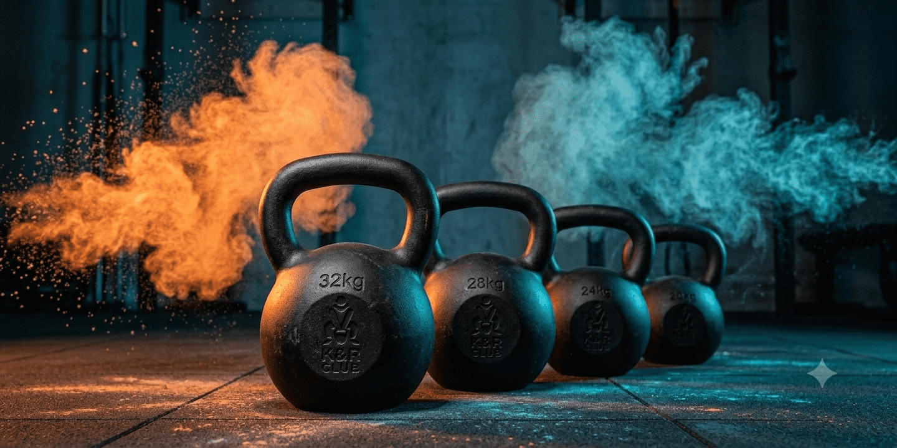
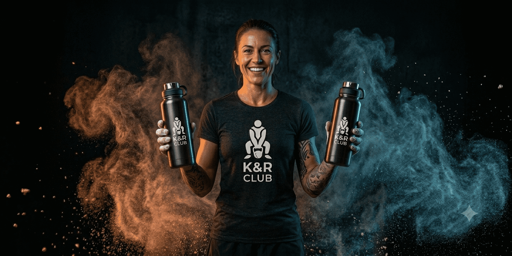

Running
Errores comunes en tu técnica de carrera
La mayoría de los corredores descuidan la cadencia, lo que incrementa el riesgo de lesiones crónicas...
Leer más +High Performance Training
Combinamos la fuerza explosiva de las pesas rusas con la resistencia técnica del running. Un enfoque científico para atletas que no se conforman con lo ordinario.
Comenzar ahora Ver rutinasDesarrolla movilidad y potencia funcional a través de secuencias fluidas con pesas rusas. Ideal para core y explosividad.
Intensidad Alta
Mejora tu biomecánica de carrera. Series de velocidad, cuestas y técnicas para corredores de asfalto y trail.
Técnica Pura
La fusión definitiva. Intervalos de fuerza con kettlebells alternados con sprints de alta intensidad.
Elite Athlete
Turnos disponibles para todos los niveles
| TURNO | LUNES - MIÉRCOLES | MARTES - JUEVES | VIERNES | SÁBADO |
|---|---|---|---|---|
| Mañana (07:00 - 10:00) | Kettlebell Flow | Running Técnico | Hybrid Training | Outdoor Run |
| Tarde (16:00 - 19:00) | Hybrid Training | Kettlebell Flow | Running Técnico | Closed |
| Noche (19:00 - 21:00) | Running Técnico | Hybrid Training | Kettlebell Flow | Closed |



Running
La mayoría de los corredores descuidan la cadencia, lo que incrementa el riesgo de lesiones crónicas...
Leer más +Kettlebells
Un estudio reciente demuestra que 20 minutos de swings queman más calorías que correr a ritmo moderado...
Leer más +Nutrición
Combinar fuerza y resistencia requiere una gestión inteligente de los hidratos de carbono...
Leer más +Obtén tu desafío personalizado para hoy basado en tu nivel actual
WOD AMRAP 20': 10 Kettlebell Swings, 10 Goblet Squats, 200m Sprint.
Dejanos tus datos y nos pondremos en contacto para tu primera clase gratuita.